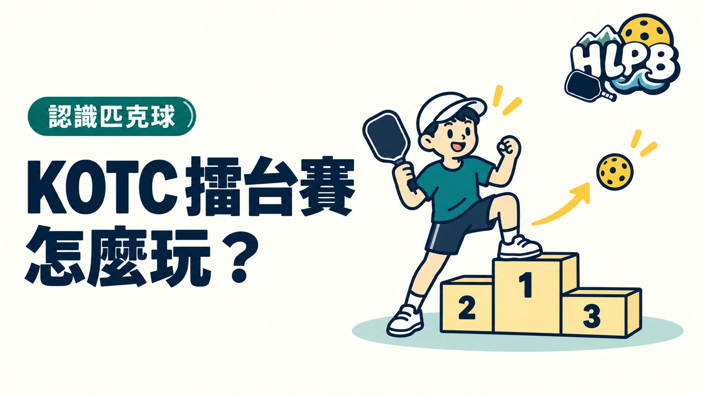

KOTC（King of the Court）是依每輪勝負移動球場的擂台玩法。它的核心是有順序地重新配對，不是所有活動都共用同一套分鐘數或積分制度。
先理解移動，再看當場細節
| 項目 | Community Pickleball Club 公開玩法 |
|---|---|
| 每輪勝方 | 往較高一層球場移動 |
| 每輪敗方 | 往較低一層球場移動 |
| 抵達新場地 | 拆開原搭檔重新對戰 |
| 已在最高層的勝方 | 留在該層並拆開搭檔 |
| 已在最低層的敗方 | 留在該層等待下一輪 |
這份資料是特定俱樂部公布的玩法，不是全球通用賽事規則。其他主辦者可以採不同輪替方式，不能看見 KOTC 就自行認定所有細節一致。
參加前，哪些條件會影響體驗？
HLPB 建議確認每輪採計時或目標分數、平手如何處理、是否拆搭檔，以及休息者何時加入。這些安排會改變每個人的出場順序，應在第一輪前說明，不等到輪替時再猜。
和一般循環賽差在哪裡？
循環賽以預定對手與戰績排名為重點；KOTC 依當輪結果調整下一輪所在場地。它可以讓參與者接觸不同搭檔，但不代表一次移動就精確判定個人的長期程度。
閱讀時把玩法介紹與正式分級分開，才能知道這場活動真正要比較的是什麼。
內容更新：2026-10-20｜資料來源：Community Pickleball Club 公開玩法
返回文章列表